Вправи і завдання до розділу III
І Ви маєте прийняти рішення.
1. Президент вантажної компанії занепокоєний деякими проблемами, що недавно виникли у діяльності його підприємства. Прибутки падають, акціонери вимагають його відставки. Він звертається до Вас, щоб отримати відповіді відносно його майбутнього підприємства. Зібрано дані про кілометраж вантажних автомобілів підприємства (в км) та доходи, отримані компанією. Президент просить Вас визначити, чи існує взагалі залежність між цими двома факторами і в якій мірі кілометраж вантажівок впливає на рівень доходу фірми
а) Ваші дії? Як Ви їх обґрунтуєте?;
б) Президент хоче знати, чи допоможе йому проведена Вами робота спрогнозувати майбутні доходи? Яким чином можна використати одержані статистичні результати для оцінки рівня доходів у близькому майбутньому?
в) Ваш результат включає регресійну модель виду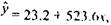
де 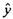 - отриманий доход (в грн.) та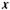- кілометраж вантажівок фірми (км) з коефіцієнтом кореляції 0.78. Як інтерпретувати результати?
г) Президент відчув довіру до статистичних досліджень, її яких
висловлена думка, що фактор 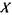 обумовлює 78% варіації в доходах
фірми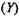. Як обґрунтована ця думка?
д) Ви повинні сказати президенту, що регресійна лінія, яку одержано, -
це середня лінія, яка краще, ніж інші, описує статистичні дані. Не
знаючи основ статистичного аналізу, президент хоче зрозумілого
для нього пояснення. Як краще це зробити?
II. Концептуальні питання.
- Що означає "мінімізація суми квадратів відхилень" у моделі, одержаній для вантажної фірми у прикладі 1 ?
- У чому полягає різниця між регресією і кореляцією?
- Ідентифікуйте залежну і незалежну змінну в кожному випадку:
а)Зріст сина та зріст батька;
б)Жіночій вік та вартість страхування життя;
в)Ціна продукції та кількість проданих одиниць продукції;
г)Попит на продукцію і кількість її покупців на ринку.
III Завдання.
5. Постійні мешканці невеликого містечка стурбовані зростанням цін па житлові будинки цієї місцевості. Більшість вважає, що коливання ціни будинку залежить від вартості землі. Дані про продаж 10 житлових будинків та про відповідну вартість землі, на якій вони побудовані, представлені у таблиці (у тис.грн.).
Ідентифікуйте залежну і незалежну змінну. Побудуйте та інтерпретуйте регресійну модель. Базуючись на моделі, чи можна вважати, що думка більшості підтвердилась?
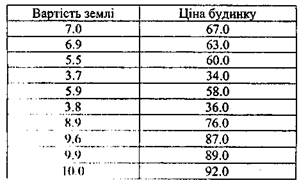
Чи дійсно навчання потребує зусиль? Для відповіді на це питання декілька допитливих студентів опитали групу своїх співкурсників із 10 чоловік і зібрали дані про витрати часу на підготовку найбільшого тесту (в год.) та успіхів про досягнення (у балах). Результати тестування подані у таблиці.
а) Базуючись на коефіцієнтах регресійної моделі, які можна зробити висновки?
б) Якщо процес навчання збільшиться на І годину, чи зміниться ступінь успіху згідно одержаної регресійної моделі?
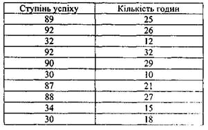
7. Були зібрані дані, які представлені нижче
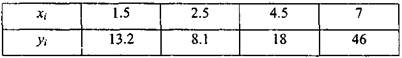
2)
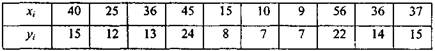
а)Побудуйте регресійну модель та інтерпретуйте результати;
б)Побудуйте діаграму розсіювання, поясніть результати;
в)Зобразіть відхилення фактичних даних згідно регресійної прямої. Яке узагальнення можна зробити?;
г)Обчисліть та інтерпретуйте коефіцієнт кореляції.
8. Популярні економічні теорії вважають, що існує прямий зв’язок між рівнем ризику інвестицій та їх очікуваною віддачею. Ризик акцій оцінюється відповідним 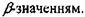У таблиці показано рівень віддачі та відповідні  для 12 фіктивних акцій, що пропонуються інвестиційною фірмою. Використовуючи фактичні дані підтвердіть позицію економічної теорії про існування прямого взаємозв'язку між досліджуваними чинниками.
для 12 фіктивних акцій, що пропонуються інвестиційною фірмою. Використовуючи фактичні дані підтвердіть позицію економічної теорії про існування прямого взаємозв'язку між досліджуваними чинниками.
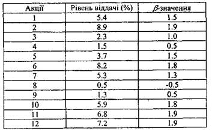
а) Типова точка зору інвесторів вважати рівень віддачі як функцію ризику. Використайте інтерпретацію обох регресійних коефіцієнтів та коефіцієнта кореляції для обґрунтування вашої точки зору з цього питання;
б)Обчисліть та інтерпретуйте середньоквадратичну помилку одержаних.